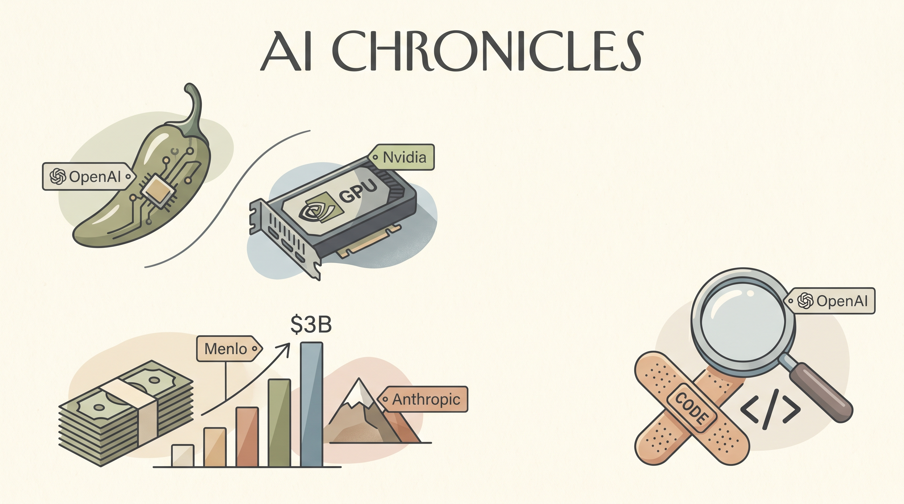

OpenAI与Broadcom合作推出首款自研AI芯片Jalapeño，迈向技术独立的关键一步。
两克伴AIGC日报
2026-06-25 星期四

本期关注：OpenAI推出首款自研AI芯片Jalapeño，与Nvidia保持距离 - Gizmodo、Menlo Ventures在Anthropic成功后融资30亿美元创纪录 - Zamin.uz、OpenAI推出AI驱动方案修复开源软件漏洞、Stripe、Anthropic 和 OpenAI 支持一项阻止呼吸道感染的行动
📰 行业动态
Menlo Ventures因Anthropic投资成功募集30亿美元，创下其50年历史上最大基金规模。
OpenAI与Trail of Bits合作推出Patch the Planet计划，利用AI修复开源软件漏洞。
🔥 今日焦点
Stripe、Anthropic 和 OpenAI 这三家在AI圈里举足轻重的公司，最近同时出现在了一个与"感冒"相关的项目里——它们共同支持了一个旨在攻克呼吸道感染的联合研究计划。
说实话，感冒这东西我们每年都要被折腾好几回，但至今没有什么好办法能真正预防。现在这三家AI巨头联手，说明他们认为生成式AI在蛋白质结构预测、病毒基因分析等领域已经足够成熟，可以真正帮上忙了。据说团队会用大模型来加速疫苗和药物的研发管线，从"大海捞针"变成"有的放矢"。
MIT Technology Review 今天发了一篇深度稿，讲的是AI时代的数据基础设施问题。简单来说就是：现在AI公司都想搞大模型，但训练和推理都需要海量数据，而这些数据往往分散在不同地方，有的被锁在防火墙后面，有的结构乱七八糟根本没法直接用。
文章指出，一个专门服务于AI的"数据中间层"正在崛起——帮助企业把散落的数据整合、清洗、标注，让大模型能真正用起来。这有点像是云计算早期的基础设施建设潮，只不过这次服务的是AI。
📚 深度长文
在欧洲遭遇破纪录热浪的背景下，能源系统正面临前所未有的压力。文章指出，极端高温导致发电厂的冷却水温度升高、效率下降，甚至被迫停机。法国在6月23日创下1947年以来最高温纪录，导致数座核电站及部分火电厂被迫降负荷或停运，电网负荷随之激增。文章通过分析发电侧的热力学限制、冷却系统容量以及输配电网的瞬时需求，揭示热浪对电力供给的结构性冲击，并指出这种冲击在可再生能源渗透率提升的当下更具系统性风险。作者进一步指出，电网运营商正借助人工智能技术提升负荷预测、实时调度与需求侧响应的精度，以缓解突发停机带来的波动。阅读本文不仅能了解气候极端事件如何直接削弱能源基础设施，还能获知AI在提升能源韧性、实现低碳转型中的关键作用，为能源系统研究者和AI从业者提供跨领域的深度洞见。
---
本期《The Download》聚焦“Engineering issue”，以“we can’t fix everything, but we can be ambitious”开篇，阐述工程学在技术变革中的核心使命：凭借人类创造力，将看似不可能的挑战转化为可落地的解决方案。文章指出，随着AI、量子计算、合成生物学等前沿领域快速迭代，单一技术已难以单独应对气候、能源、公共卫生等系统性难题，必须通过跨学科、系统化的工程思维将多项技术进行有机集成。
核心观点强调三点：① **雄心驱动创新**——只有设定宏大目标，才能激发科研与产业的持续突破；② **工程化是规模化关键**——从实验室原型到商业化产品，需要严谨的设计、标准化的流程与可靠的质量控制；③ **人本价值不可缺**——技术本身无善恶，工程师需承担伦理与社会责任，确保技术红利普惠而非加剧不平等。
🐦 Ta们说
> "We're thrilled to lead Mirendil's $200M seed round.
Frontier AI work has been locked inside a few big labs.
> "Super excited for our recursive self-improving agents launch…
No, they won’t be using Anthropic’s expensive token-guzzling models
> "Excited to partner with @OpenRouter ⚡
Products like OpenRouter Fusion and Sakana Fugu have sparked a serious conversation about dependency and resilience in AI.
📄 重点论文
**核心贡献**: SHERLOC提出了一个训练免费的框架，将推理型LLM与紧凑的表示相结合，专门用于代码修复任务中的故障定位。该框架通过结构化假设驱动的探索和推理，解决了现有定位方法只提供文件检索结果而缺乏可操作诊断信息的问题，显著提高了智能体在代码修复过程中的定位效率和准确性。
**与AI Agent的关联**: 该论文直接针对AI Agent在代码修复场景中的应用，聚焦于多轮工具使用（multi-turn tool use）中资源浪费的关键问题。其框架设计对提升自主智能体的诊断和定位能力具有直接价值，为构建更高效的代码修复Agent提供了可复用的方法论。
**核心贡献**: 该论文首次形式化证明了通用智能体在'大世界'环境中的固有能力局限，指出标准的一致性保证无法区分关键瓶颈和无关失败。基于此，提出了结构性认证（structural certification）框架，这是一种过渡局部的框架，能够精确识别智能体在世界模型中的能力和局限，为通用Agent的安全性和可靠性评估提供了理论基础。
**与AI Agent的关联**: 该论文从理论层面深入探讨了通用智能体的本质局限性和认证方法，对AI Agent研究具有重要的基础性意义。其提出的结构性认证框架为评估和保障自主智能体在复杂环境中的行为可靠性提供了新的理论工具，对Agent安全性和可解释性研究有重要贡献。
⭐ 17.3K
当你用 Cursor、Windsurf 这类 AI 编程工具写前端代码时，有没有遇到这种情况：让 AI 生成的页面颜色、字体、间距总是和你的设计稿对不上，每次都要反复叮嘱它"按钮用蓝色"、"标题 24px"、"圆角 4px"……说得累不说，AI 还经常记错或自己发挥。DESIGN.md 就是来解决这个问题的。